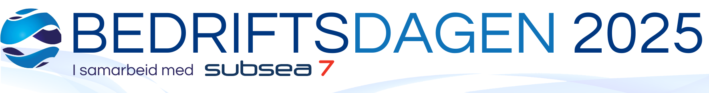

m/ Subsea7, Equinor, Global Maritime, DNV og Sjøfartsdirektoratet
Bedriftsdagen starter med frokostforedrag, som er et mindre foredrag koblet til dagens tema. Temaet vil offentliggjøres i løpet av høsten.
På frokostforedraget er det bare samarbeidspartnere sammen med hovedsamarbeidspartner som har mulighet til å delta. Det er opp til hver bedrift hva de ønsker å fokusere på i sin del av frokostforedraget.
Studentene kan møte bedriftene på stand i vrimleområdet.
Her får bedriftene 5–8 minutter til å pitche sitt sommerjobb-tilbud for studentene. Formålet med dette er at studentene i de lavere årstrinnene skal sitte igjen med mer kunnskap om hva bedriftene vil ha i en sommerstudent, samt informasjon om hvordan søknadsprosessen foregår og når eventuelle frister er. Dette skaper en tidlig interesse blant studentene, og sikrer bedriftene mange motiverte marinstudenter i søkermassen.
Her samles kloke hoder fra hoved- og samarbeidspartnerne for å diskutere rundt et dagsaktuelt maritimt tema. Her vil det være åpent for spørsmål fra studenter i regi av ordstyreren.
Under selve dagen vil det være muligheter for å holde speedintervjuer parallelt med stands. Her får bedriftene et rom til rådighet, der de utfører speedintervju med påmeldte studenter. Dette er svært populært blant studentene, og en gylden mulighet til å kapre en snart ferdigutdannet sivilingeniør med ettertraktet kompetanse.
På kvelden er det lagt opp til middag for bedriftsrepresentanter og diplomstudentene. Her vil det være en ypperlig mulighet til å bli enda bedre kjent med studentene som snart skal ut i arbeidslivet og er på jakt etter fast jobb.
Etter middagen er det lagt opp til at vi drar til Studentersamfunnet og ser UKA-revyen sammen.